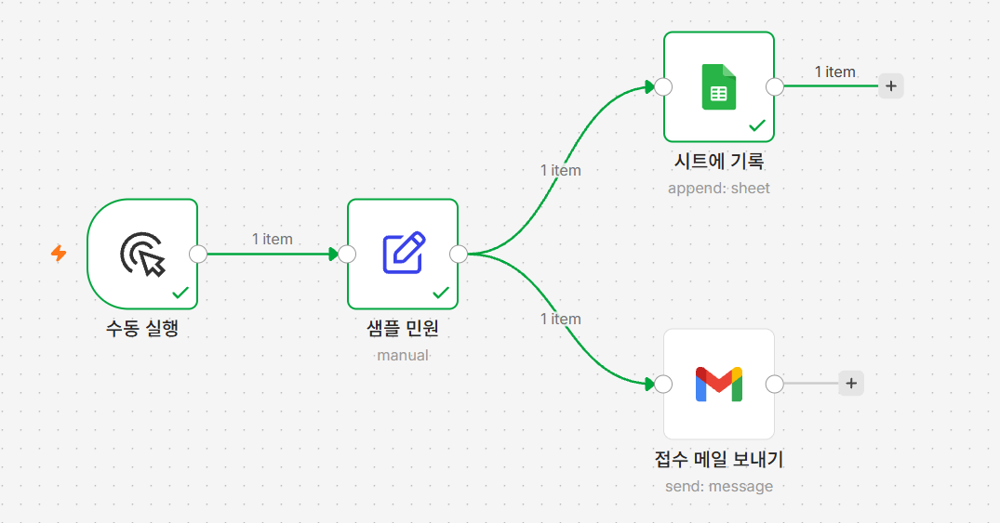
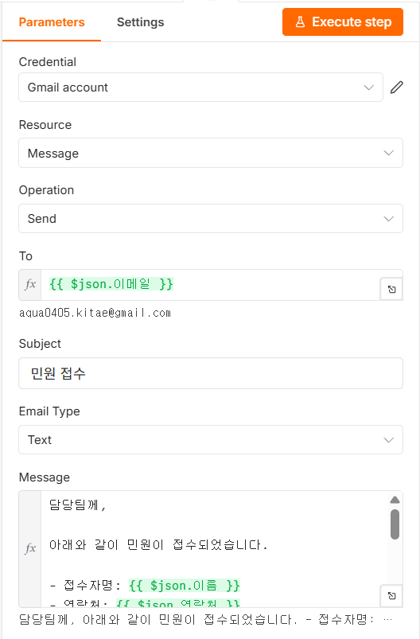

04 이메일 자동 발송
접수 확인 메일을 접수자에게 보냅니다
왜 이게 필요한가
- 민원인은 처리가 늦어져서가 아니라 접수됐는지조차 모를 때 가장 답답함 → 다음날 확인 전화를 겁니다
- 확인 전화 응대 시간이 되려 민원 처리 시간보다 길기도 함 — 민원인도 담당자도 양쪽 다 손해
- 해결: 접수되는 순간 확인 메일이 자동으로 발송되어, 담당자가 열어보기 전에 이미 발송되어 있음
시트에 기록 뒤가 아니라 샘플 민원에서 따로 갈라져 나옵니다. 왜 그래야 하는지는 따라하기 첫머리 노트를 보세요 — 이 강좌 이후로 새 노드를 붙일 때마다 같은 거리김이 나옵니다.
이번 시간에 만들 것
접수된 민원 내용을 바탕으로 접수자(민원인) 본인에게 접수 확인 메일을 자동으로 보내는 단계를 추가합니다. 실제 담당자에게 가는 메일은 07강에서 따로 만듭니다.
샘플 민원에서 두 갈래로 갈라진 캔버스
따라하기
시트에 기록을 지나면 값이 "기록 결과"로 바뀌어 민원 내용이 사라집니다. 새 노드는 항상 샘플 민원에서 직접 갈라집니다.
- Gmail 노드 추가하기
샘플 민원오른쪽+→Gmail - 자격증명 연결하기
Sign in with Google→ 같은 계정 선택 → 허용 →Gmail account생성(03강과 별개) - 받는 사람 입력하기
To표현식 전환 →{{ $json.이메일 }}Resource·Operation은 기본값(Message·Send) 유지 - 제목 입력하기
Subject=민원 접수(글자 그대로) - 이메일 형식 바꾸기
Email Type→Text - 본문 입력하기
Message표현식 전환 후 아래 붙여넣기담당팀께,
아래와 같이 민원이 접수되었습니다.
- 접수자명: {{ $json.이름 }}
- 연락처: {{ $json.연락처 }}
- 이메일: {{ $json.이메일 }}
- 민원 종류: {{ $json.종류 }}
- 상세 설명: {{ $json.상세설명 }}
- 등록일: {{ $now.toFormat('yyyy년 MM월 dd일 HH시 mm분') }}
내용 확인 후 신속한 처리 바랍니다.
감사합니다.[그림 4-2] 설정을 마친 Gmail 노드
To·Message는fx표시,Subject는 민원 접수,Email Type은 Text - 노드 이름 바꾸기
접수 메일 보내기로 변경
실행하고 확인하기
Execute workflow→ 받은편지함 확인- 제목
민원 접수, 접수자명·연락처·종류 채워짐, 등록일 오늘 날짜 = 성공
안 될 때
- 메일이 안 옴 — 스팸함 확인,
ToExpression 모드 확인 - 본문에
{{ $json.이름 }}그대로 나옴 —Message표현식 전환 확인 - 시트에 기록 뒤에 붙였더니 값이 빔 — 선을
샘플 민원에서 새로 연결
확인 문제
객관식Q1. Gmail 노드를 붙일 때 반드시 샘플 민원 노드 오른쪽에서 갈라져야 하는 이유는?
- Gmail 노드는 다른 노드 뒤에 붙을 수 없어서
시트에 기록을 지나면 값이 기록 결과로 바뀌어 민원 내용이 사라지기 때문에- 자격증명이 노드 위치에 따라 달라지기 때문에
- 화면 정렬이 흐트러지기 때문에
정답 확인
정답: ② 이미 지나간 노드의 결과로 값이 바뀌어 버리므로, 원본 민원 데이터가 필요한 노드는 항상 샘플 민원에서 직접 연결해야 합니다.
객관식Q2. To 칸이 표현식(Expression) 모드로 바뀌지 않았을 때 생기는 문제는?
- 메일이 두 번 발송된다
- n8n이
{{ $json.이메일 }}이라는 글자 그대로를 주소로 해석해 발송에 실패한다 - 제목이 비어서 나간다
- 자격증명이 초기화된다
정답 확인
정답: ② 표현식 모드가 아니면 계산되지 않고 글자 그대로 처리되어 올바른 이메일 주소를 찾지 못합니다.
단답형Q3. 이번 강의에서 Gmail 노드의 Email Type은 기본값 HTML 대신 무엇으로 바꿔야 하나요?
정답 확인
정답: Text — 서식 없는 글로만 보내기 위해서입니다.
이번 단계 워크플로우 받기
따라오다 막혔다면 이 파일을 받아 n8n에서 불러오면 이어서 진행할 수 있습니다.
시트에 기록과
접수 메일 보내기 두 노드를 각각 열어 자격증명을 다시 골라야
합니다. 시트에 기록의 Document 칸에는
여기에_본인_시트_ID 자리표시자가, 샘플
민원 노드의 이메일 값에는
본인이메일@example.com 자리표시자가 들어 있으므로 각각 본인
시트·본인 주소로 바꿔야 합니다(이 이메일 값이 접수 메일의 받는 사람이기도 합니다).
시트 탭 이름은 시트1로 들어 있으니 본인 시트의 탭 이름이
다르면 목록에서 다시 골라야 합니다.